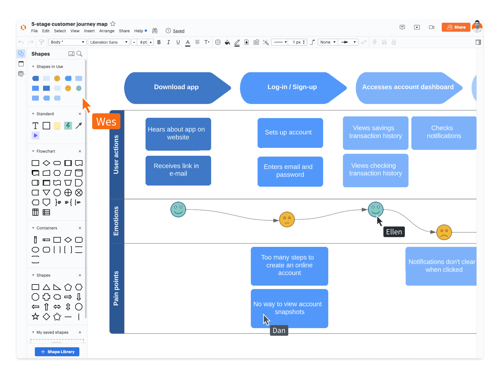

Automatisation Intelligente
Laissez NovaFlow s'occuper des tâches répétitives.

Description détaillée
Créez des flux de travail automatisés sans écrire une seule ligne de code. Définissez des déclencheurs (ex: une tâche est terminée) et des actions (ex: envoyer un message Slack ou créer une sous-tâche) pour automatiser votre quotidien.
Avantages clés
- Constructeur de workflow visuel
- Intégrations avec +1000 apps
- Modèles d'automatisation prêts à l'emploi
- Réduction drastique des erreurs humaines
Pourquoi c'est utile ?
Le temps est votre ressource la plus précieuse. En automatisant les processus administratifs et répétitifs, vous libérez du temps pour que votre équipe puisse se concentrer sur des tâches à haute valeur ajoutée et sur l'innovation.